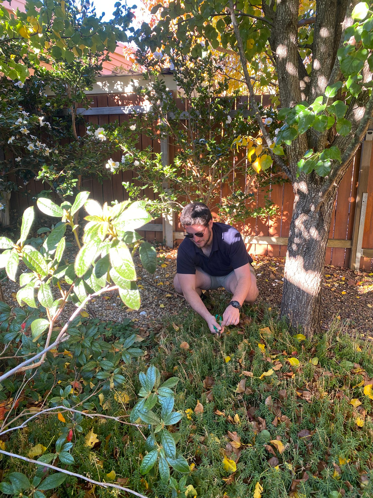

Shrub pruning
Selective cuts to maintain form, encourage healthy growth and respect flowering cycles.
Thoughtful shaping, seasonal timing and a careful finish for established gardens.
Good pruning is not simply about reducing size. It considers where a plant flowers, how it responds to a cut and what shape will suit the surrounding garden. Good Natured Gardens provides specialist plant pruning in Eltham using seasonal timing and techniques suited to each plant.
For hedges and topiary, we balance crisp presentation with healthy growth. Powered equipment handles efficient shaping, while secateurs and hand tools allow a more detailed finish where the plant requires it.
Our portfolio includes hedge shaping and detailed secateur work in Eltham. These two scales of work—strong overall lines and careful close finishing—help a maintained garden feel composed rather than simply cut back.

Selective cuts to maintain form, encourage healthy growth and respect flowering cycles.
Shaping and ongoing trimming for formal hedges, screening plants and topiary.
One-off or regular care coordinated with lawn and planted-area needs.
Yes. We provide hedge trimming and detailed finishing work in Eltham, including shaping with hand tools where appropriate.
Timing depends on the species, flowering cycle and desired result. We plan pruning around each plant rather than using one schedule for everything.
Often, yes. The safest approach depends on the hedge species, condition and how far it can be reduced without compromising healthy growth.
Tell us which plants or hedges need attention and the result you have in mind.
Ask for a quote